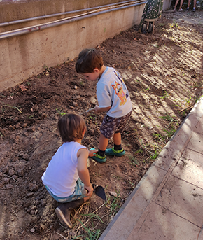
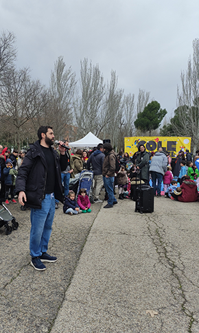

Qué Hacemos
Nuestra actividad en el consejo escolar, comisiones de trabajo y actividades para las familias
Nuestra representación
Presencia en el Consejo Escolar
Contamos con una representante de la AFA en el Consejo Escolar, que se une a los otros cuatro padres y madres elegidos por votación de todas las familias con estudiantes en el centro.




Nuestras Comisiones de Trabajo
Grupos de trabajo sobre los temas que nos parecen más relevantes o en los que necesitamos personas que lideren iniciativas
Primer Ciclo 0-3 años
Atención y apoyo específico para las familias con niños y niñas en la etapa de educación infantil.
Educación
Busca la mejora educativa, actuando como enlace entre familias y colegio, proponiendo actuaciones relacionadas con el nivel académico y la participación de las familias.
Extraescolares
Organización de actividades fuera del horario escolar: excursiones, visitas y actividades complementarias.
Comedor
Colabora en el servicio de comedor escolar, seguimiento de menús, gestión de incidencias y mejora continua del servicio.
Comunicación
Comunicación entre la AFA y las familias a través de web, redes sociales y otros canales de información.
Manos a la Obra
Mantenimiento del colegio, pequeñas reparaciones, jardinería, mejoras y embellecimiento de las instalaciones.
Convivencia
Apoyo a la resolución de conflictos, fomento de la buena convivencia y creación de un ambiente escolar positivo.
Festejos
Organización de fiestas y celebraciones: Navidad, Fin de curso, Fiesta de las Culturas y otros eventos especiales.
Actividades para Disfrutar en Familia
Espacios de encuentro y convivencia para toda la comunidad educativa
Club Montaña
Cada trimestre salimos a la montaña en una ruta adaptada para toda la familia. Respiramos aire limpio, estiramos las piernas y compartimos bocadillos.
Huerto Escolar
Una vez a la semana nos juntamos en familia para plantar, regar y cultivar lo que haga falta. Aprendemos sobre la naturaleza y el trabajo en equipo.
Bicicletadas
Salidas en bicicleta para disfrutar del aire libre, hacer ejercicio y fortalecer los lazos entre las familias de nuestra comunidad.